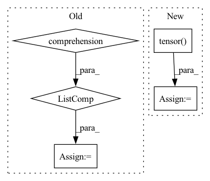

Pattern ID :11477
Before Change
if n_categories:
if cls_wise_sampling is not None and cls_wise_sampling != "no":
if cls_wise_sampling == "all":
indices = [c for c in range(n_categories)]
n_samples = 8*n_categories
elif cls_wise_sampling == "some":
num_categories_plot = n_samples//8
indices = np.random.permutation(n_categories)[:num_categories_plot]After Change
batch_size = num_classes*8
indices = [c for c in range(num_classes)]
elif isinstance(sampler, int):
y_fake = torch.tensor( [sampler]*batch_size, dtype=torch.long) .to(device)
else:
raise NotImplementedError
In pattern: SUPERPATTERN
Frequency: 3
Non-data size: 5
Instances Fragment ID: 39148180
Project Name: postech-cvlab/pytorch-studiogan
Commit Name: 990ef9b664a4c4d7a8791a660dbd08b56ca8ef13
Time: 2020-08-02
Author: first287@naver.com
File Name: utils/sample.py
M Class Name: AnonimousClass
N Class Name: AnonimousClass
M Method Name: sample_latents(8)
N Method Name: sample_latents(8)
M Parent Class:
N Parent Class:
M File Name: utils/sample.py
N File Name: utils/sample.py
M Start Line: 23
M End Line: 54
N Start Line: 23
N End Line: 57
Before Change
P = 10
points = np.concatenate(
[X.projection(_G.sample()) for _ in range(P)] ,
axis=1
)
assert points.shape == (X.dim, P)
B = 5
features = np.random.randn(B, in_rep.size, P)
filters = np.zeros((out_rep.size, in_rep.size, basis.dim, P), dtype=np.float)
filters = basis.sample(points, out=filters)
self.assertFalse(np.isnan(filters).any())
self.assertFalse(np.allclose(filters, np.zeros_like(filters)))
a = basis.sample(points)
b = basis.sample(points)
assert np.allclose(a, b)
output = np.einsum("oifp,bip->bof", filters, features)
for g in G.testing_elements():
output1 = np.einsum("oi,bif->bof", out_rep(g), output)
transformed_points = X.action(inclusion(g)) @ points
transformed_filters = basis.sample(transformed_points)
transformed_features = np.einsum("oi,bip->bop", in_rep(g), features)
output2 = np.einsum("oifp,bip->bof", transformed_filters, transformed_features)
if not np.allclose(output1, output2):
print(f"{in_rep.name}, {out_rep.name}: Error at {g}")After Change
output = torch.einsum("oifp,bip->bof", filters, features)
for _ in range(20):
g = G.sample()
output1 = torch.einsum("oi,bif->bof",
torch.tensor(out_rep(g), dtype=output.dtype),
output)
transformed_points = torch.tensor(
X.action(inclusion(g)),
dtype=points.dtype) @ points
transformed_filters = basis.sample(transformed_points)
transformed_features = torch.einsum("oi,bip->bop",
torch.tensor(in_rep(g), dtype=features.dtype),
features)
output2 = torch.einsum("oifp,bip->bof", transformed_filters, transformed_features)
if not torch.allclose(output1, output2, atol=1e-5, rtol=1e-4):
print(f"{in_rep.name}, {out_rep.name}: Error at {g}") Fragment ID: 39148183
Project Name: quva-lab/escnn
Commit Name: 98a89c5f80da2d489df613d8c73d943c69fb7f51
Time: 2022-08-28
Author: gabriele.cesa@gmail.com
File Name: test/kernelspaces/test_restrictedwignereckart.py
M Class Name: TestWEbasis
N Class Name: TestWEbasis
M Method Name: _check_irreps(6)
N Method Name: _check_irreps(6)
M Parent Class: TestCase
N Parent Class: TestCase
M File Name: test/kernelspaces/test_restrictedwignereckart.py
N File Name: test/kernelspaces/test_restrictedwignereckart.py
M Start Line: 224
M End Line: 274
N Start Line: 309
N End Line: 353
Before Change
P = 10
points = np.concatenate(
[X.projection(G.sample()) for _ in range(P)] ,
axis=1
)
assert points.shape == (X.dim, P)
B = 5
features = np.random.randn(B, in_rep.size, P)
filters = np.zeros((out_rep.size, in_rep.size, basis.dim, P), dtype=np.float)
filters = basis.sample(points, out=filters)
self.assertFalse(np.isnan(filters).any())
self.assertFalse(np.allclose(filters, np.zeros_like(filters)))
a = basis.sample(points)
b = basis.sample(points)
assert np.allclose(a, b)
output = np.einsum("oifp,bip->bof", filters, features)
for g in G.testing_elements():
output1 = np.einsum("oi,bif->bof", out_rep(g), output)
transformed_points = X.action(g) @ points
transformed_filters = basis.sample(transformed_points)
transformed_features = np.einsum("oi,bip->bop", in_rep(g), features)
output2 = np.einsum("oifp,bip->bof", transformed_filters, transformed_features)
if not np.allclose(output1, output2):
print(f"{in_rep.name}, {out_rep.name}: Error at {g}")After Change
output = torch.einsum("oifp,bip->bof", filters, features)
// for g in G.testing_elements():
for _ in range(50):
g = G.sample()
output1 = torch.einsum("oi,bif->bof",
torch.tensor(out_rep(g), dtype=output.dtype, device=output.device),
output)
transformed_points = torch.tensor(X.action(g), device=points.device, dtype=points.dtype) @ points
transformed_filters = basis.sample(transformed_points)
transformed_features = torch.einsum("oi,bip->bop",
torch.tensor( in_rep(g), device=features.device, dtype=features.dtype) ,
features)
output2 = torch.einsum("oifp,bip->bof", transformed_filters, transformed_features)
if not torch.allclose(output1, output2, atol=1e-5, rtol=1e-4):
print(f"{in_rep.name}, {out_rep.name}: Error at {g}") Fragment ID: 39148185
Project Name: quva-lab/escnn
Commit Name: 98a89c5f80da2d489df613d8c73d943c69fb7f51
Time: 2022-08-28
Author: gabriele.cesa@gmail.com
File Name: test/kernelspaces/test_wignereckart.py
M Class Name: TestWEbasis
N Class Name: TestWEbasis
M Method Name: _check_irreps(4)
N Method Name: _check_irreps(4)
M Parent Class: TestCase
N Parent Class: TestCase
M File Name: test/kernelspaces/test_wignereckart.py
N File Name: test/kernelspaces/test_wignereckart.py
M Start Line: 77
M End Line: 119
N Start Line: 67
N End Line: 112